id="js_content" style="">这篇文章昨天已发
经热心网友提醒
发现文章中有些内容存在错误和偏颇
所以昨晚将文章删除
今天修改重发
只是介绍电影
错误内容均已删除
正文共计3000字左右
预计阅读时间5min
转载请在后台回复“授权”
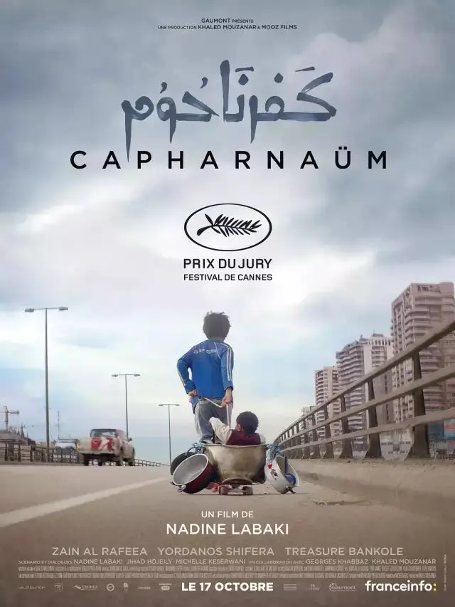
-01-
男孩：我要起诉我的父母
法官：为什么
男孩：因为生了我
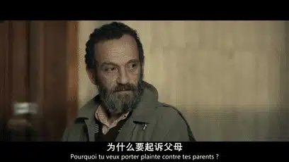
这是黎巴嫩电影《迦百农》的开场。
一个12岁男孩竟然以这样一个让人哭笑不得的理由起诉了自己的父母。
这个情节看上去有些荒唐。
可当你注意到那丝挂在稚嫩脸颊上的疲惫，看到那双既单纯又决绝的眼神时。
你知道这个孩子不是在胡闹，而是严肃认真的。
每个人都能够意识到这个幼小的身躯一定经历了常人难以想象的苦难。
于是这个在戛纳电影节上让无数人落泪的故事开始了。
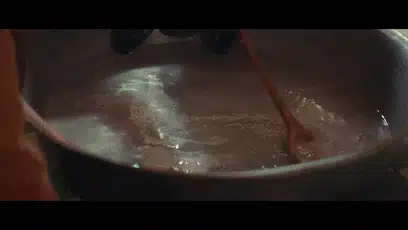
小主人公叫扎因，出生在一个难民家庭，家中兄妹有7人，父母有生无养，甚至都给不了孩子们一个身份证。
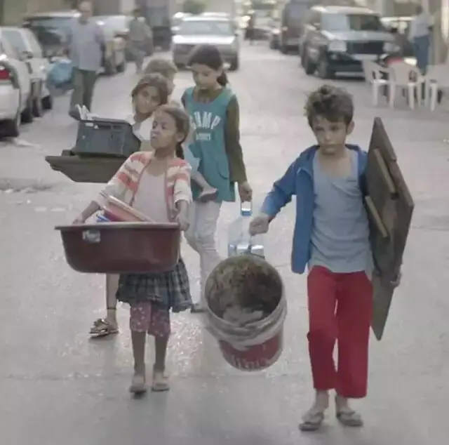
没有奶粉，就喝糖水。
没有身份，那就像蝼蚁一样生活在城市的“阴影”中。
扎因有可爱的童颜，却没有正常的童年。
他穿行在肮脏的街道中，游走于世故阴险的成人世界中，虽小小年纪，却懂得用拳头和脏话保护自己。
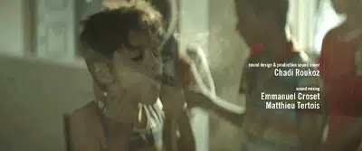
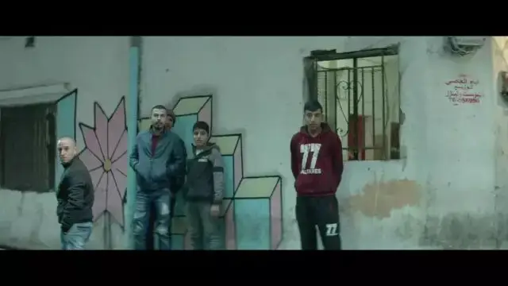
为了生活，他和妹妹们上街卖果汁饮料，去药店骗取药物。
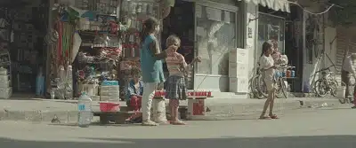
他甚至有一份固定的工作，那就是为一个杂货店老板送货，而送的东西不仅仅是一些食品，还有笨重的煤气罐。
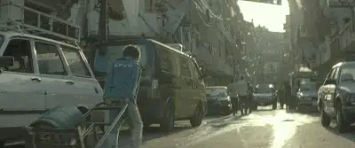
但不论东西有多重，路程有多远，扎因都是咬着牙，用自己的小手将货物送到顾客家中。
在扎因的世界里，学校、美食、柔软舒服的床铺都是遥远的天堂，甚至，父母关切的目光、温柔的话语都是一种奢侈。
扎因忍受了身边一切的暴力、侮辱和殴打，并且作为一个孩子，他仍然充满着童真和自己的坚持。
那就是保护和照顾比自己更弱小、更无助的妹妹们。
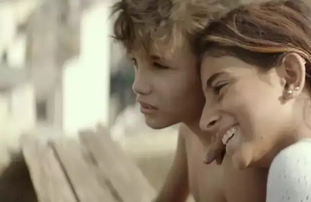
他鄙夷自己的父母用铁链子拴住妹妹的脚。
他痛恨并警惕着杂货店老板对妹妹的“觊觎”。
当扎因发现比自己小一岁的妹妹来初潮时，他立马帮妹妹的内裤洗干净。
因为，一旦被父母发现，那就意味着自己的妹妹将是一个可以生育、出嫁的新娘，即使她只有11岁！
可最终，扎因还是没有保护好自己的妹妹，尽管他拼命地反抗、奔跑，却眼睁睁地看着自己的父母将妹妹送入虎狼之口。
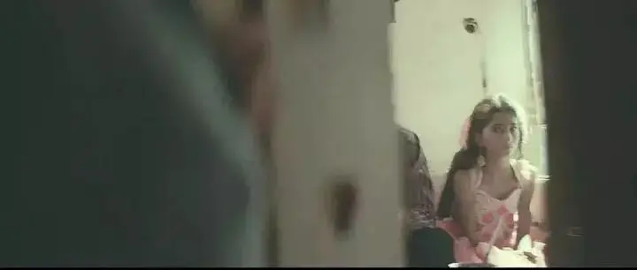
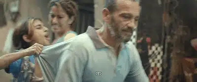
扎因痛恨自己的父母、痛恨身边的一切，他选择离家出走，而迎接他的不是光明的未来，而是更大的绝望.....
-02-
这是一部有着意大利新现实主义精神的作品。
电影中的主演都是有过难民经历的非职业演员，扎因的扮演者在现实中就是一个生活悲苦、没有学上的叙利亚难民。
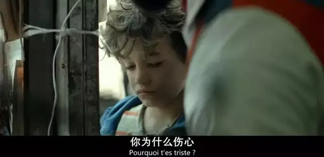
他那童真般的神情、动作里浸染那种现实中摇摇欲坠的慌张感和令人心碎的愁容。
就像当年《偷自行车的人》中的小布鲁诺一样，他们就是随意在街头走一段路都比矫揉造作、痛哭流涕的戏子更有魅力。
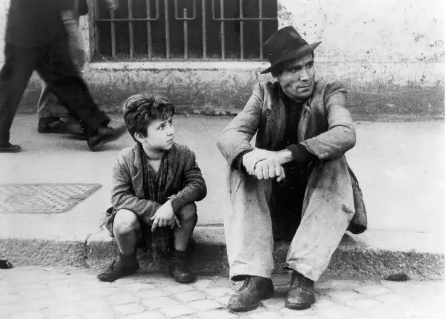
因为，每个观众都有一双心灵的眼睛，他们能够很敏锐的察觉到其中的真实以及真实之上不能承受的沉重。
《迦百农》里刻画的悲剧和《偷自行车的人》一样：冰冷的现实面前，一个人往往会饥不择食、慌不择路，做出违背自己良心和原则的事。
《偷自行车的人》中敦厚老实的父亲为了生活，最终成为了一个自己痛恨的偷车贼。

而《迦百农》里的扎因也成为了一个自己痛恨的人。
扎因离家出走后，被另一个埃塞尔比亚难民母亲拉希尔收留，白天，拉希尔在外工作，扎因则在家中帮忙照顾拉希尔的孩子尤纳斯。
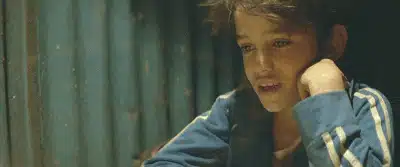
日子虽然过得很苦，可扎因感受到了那种家庭的温暖。
可这份温暖就仿佛是置身风中的烛光，随时可能被“冷风”吹灭。
拉希尔也是一个没有身份的黑户难民，她为了能过让自己的孩子活在“阳光下”，拼尽全力去打工。
可悲剧的是，在一次外出打工中，拉希尔因为没有合法身份证被捕入狱，留下了嗷嗷待哺的尤纳斯以及12岁的赞恩。
监狱中，拉希尔对尤纳斯担心不已，她用手挤着自己胀痛的乳房，眼泪和奶水不停地从身体涌出。
那种作为妈妈的悲痛令人心碎。
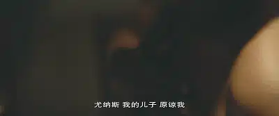
扎因期盼着拉希尔回来，可等了一天又一天却没有拉希尔的任何消息。
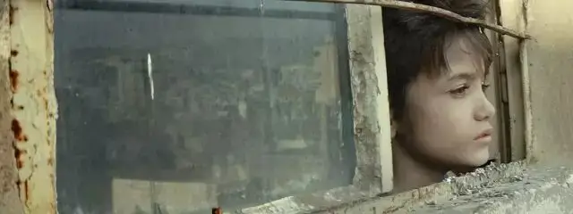
扎因看着可怜的尤纳斯说：“没想到，你的妈妈比我的妈妈还狠心”。
于是，小小的扎因扛起了照看尤纳斯的重任，他砸锅卖铁想尽一切办法来填饱两人的肚子。
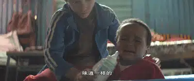
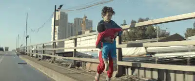
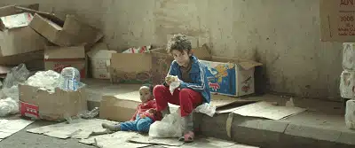
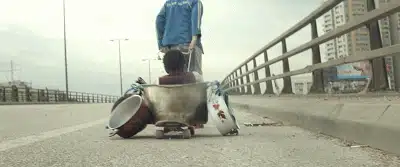
因为尤纳斯太小，扎因还必须要将他抱在自己的怀里。
身心俱疲！无奈之下，扎因用绳子拴住尤纳斯的腿将其固定在一处。
看着扎因走远，尤纳斯咿咿呀呀朝着他爬，却被绳子牢牢地牵扯在原处。
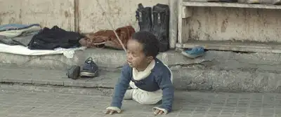
此情此景，不正是父母曾经对妹妹们所做的事么，扎因心里悲痛极了，自己曾因此而憎恨父母，却没想到自己如今也会变成这样。
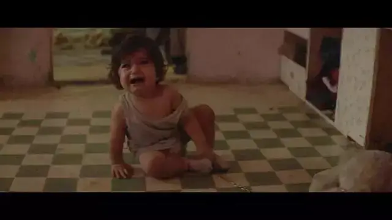
扎因急忙跑回去解开绳子紧紧地抱着尤纳斯....
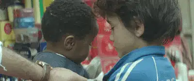
这就是赤裸裸、冷冰冰的现实，任何的大道理、任何的心存美好都不得不跪倒在现实面前。
扎因的父母不也是这样一步步变成一个冷漠麻木、只求生存的“恶人”么。
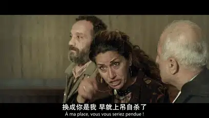
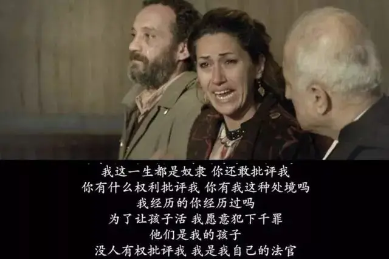
这就是难民难以逃脱的宿命！
出生、结婚、生子，这些本来是人生中最美好、最值得纪念的时刻，却成为了他们人生被诅咒的开始。
扎因出生后就没有一天好日子，妹妹结婚后几个月就暴毙于医院门口，扎因的父母以及拉希尔有生却无法养，只能在自责、苦痛中咒骂身边的一切。
法庭上，扎因的父亲痛哭：“我诅咒结婚的那天，我为什么过得如此艰辛”。
这让我想起了《了不起的盖茨比》中的一句台词：
“每逢你想要批评别人的时候，你就要记得，这个世界上并不是人人拥有你的优越条件。”
这就是现实的冰冷，有些人看上去总是那么不可理喻，可当你真的凝视过别人的生活后，你就不得不选择沉默。
因为你明白，如果他们有选择，可能比你更像一个好人。
而本片所展现的残酷不止于此，哀莫大于心死，现实冰冷到一个地步，竟能让最充满幻想、好奇和情感力量的小孩心如死灰。
因此，12岁的扎因竟说出如此绝望的话：
我希望大人听我说
我希望无力抚养孩子的人别再生了
我只记得
暴力 侮辱或殴打
链子 管子 皮带
我听过的最温柔的一句话是
滚 婊子的儿子
滚 你这垃圾
生活是一堆狗屎
不比我的鞋子更值钱
我住在这里的监狱
我像一堆腐烂的肉
生活是个婊子
我以为我们能做好人
被所有人爱
但上帝不希望我们这样
他宁愿我们做洗碗工
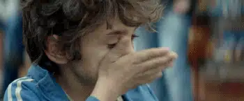
扎因代表难民向这个世界发出了自己最真实的抱怨和呐喊，难民问题的解决考验着全世界人的良知和智慧。
作为普通人，我们能做的很少，但有一点非常重要，那就是尽自己最大的可能去了解难民问题的真相，这也是对他们的最大尊重。
推荐阅读
▼
（点击蓝字即可获取全文）
真诚的黑暗远胜于浮夸的光明
继《沉默》之后，又一部必刷的信仰力作
这里没有挑逗你眼目情欲的小鲜肉
也没有挑动你肉体情欲的段子
更没有膨胀你今生骄傲的鸡血
我们只在乎那些最质朴真诚的作品
在那里我们才能恢复真正的想象力
我们也坚信这才是我们真正需要的

ID:Six_hundred_hits
长按二维码，一键关注
【六百击】
-END-
电影评论
尽情分享朋友圈

苹果打赏通道
小提示：文末广告是腾讯配送广告，内容与本号无关，但您的每次点击（无需反复点）都会给平台带来几毛收益，欢迎您点击支持六百击。